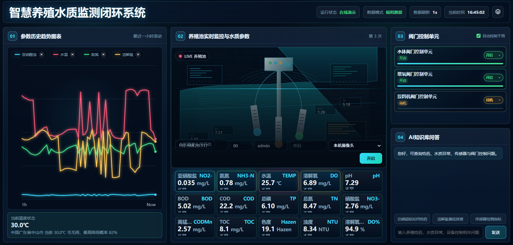
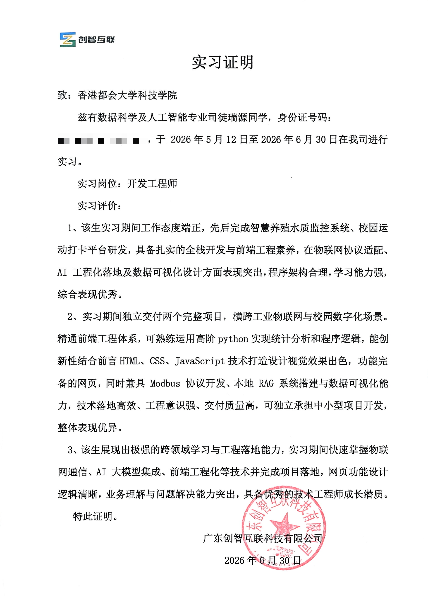
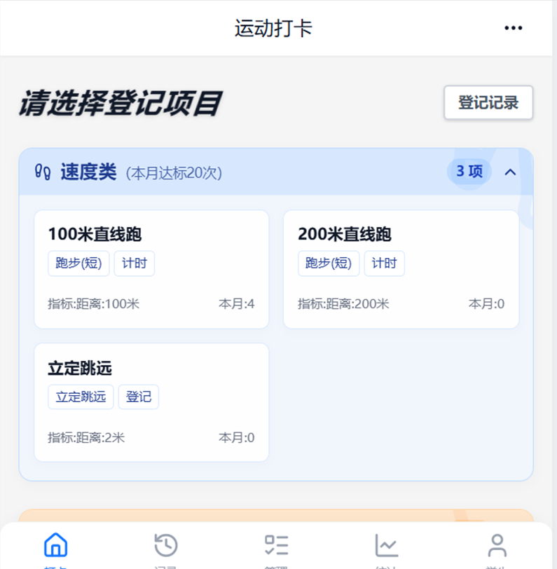

Smart aquaculture water quality monitoring system
Developed a monitoring-oriented system across industrial IoT communication, Modbus protocol adaptation, AI engineering implementation, and data visualization.

Internship Experience
A focused record of internship proof, practical project work, and reflections from professional learning.
Proof
This area is prepared for an internship certificate, verification letter, or official document.

Issued by Guangdong Chuangzhi Internet Technology Co., Ltd. for my Development Engineer internship from May 12 to Jun 30, 2026.
Open CertificateProject Work
A concise space to explain what I built, what problem it solved, and what evidence supports the work.
Developed a monitoring-oriented system across industrial IoT communication, Modbus protocol adaptation, AI engineering implementation, and data visualization.

Delivered a campus digitalization platform with clear front-end logic, complete page functions, and a polished HTML/CSS/JavaScript visual interface.

Independently completed two full projects spanning industrial IoT and campus digital services, showing strong engineering execution.
Technical Keywords
Reflection
The internship strengthened my ability to turn requirements into working systems, from architecture and front-end implementation to data logic and deployment-minded delivery.
I quickly learned IoT communication, AI model integration, local RAG workflows, and visualization design while keeping the final product clear and usable.
The company recognized my strong learning ability, reasonable program architecture, high delivery quality, and potential to grow into an excellent technical engineer.
Next
See the project case studies that show my software, AI, and data capabilities in more detail.